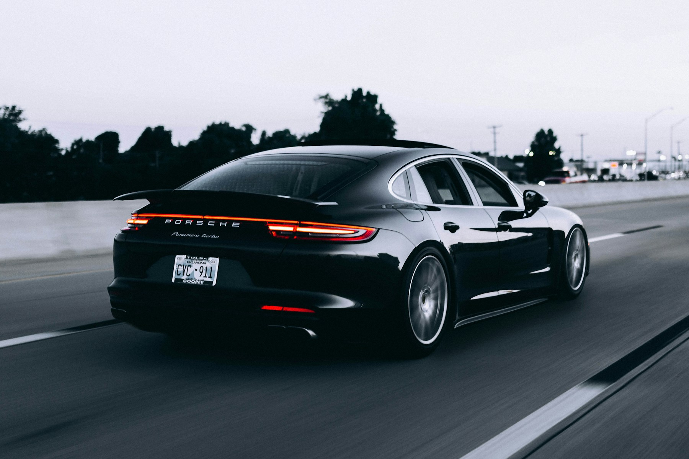
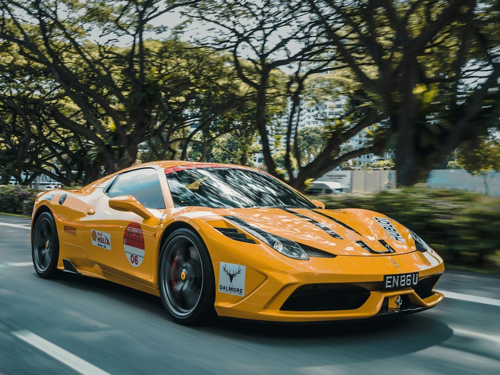

Деликатная очистка
Кузов, диски и труднодоступные зоны. Удаление дорожных загрязнений перед следующим этапом ухода.

Студия эстетики автомобиля
От первого отражения до последнего штриха.
Уход, который возвращает удовольствие от автомобиля.
Разный пробег, разные задачи.
Подберите уход под состояние автомобиля.
Кузов, диски и труднодоступные зоны. Удаление дорожных загрязнений перед следующим этапом ухода.
Деликатная полировка для уменьшения мелких следов эксплуатации и более глубокого цвета покрытия.
Защитный состав после подготовки кузова. Помогает облегчить последующее мытьё автомобиля.
Три понятных пакета.
Демоцены указаны для седана.
Регулярный уход
Освежить автомобиль
и вернуть ощущение чистоты.
Около 4 часов
Блеск и защита
Раскрыть цвет кузова
и защитить результат.
Около 1–2 дней
Комплексный подход
Внимание к кузову
и каждой поверхности внутри.
Около 2–3 дней
Иллюстративное предложение. Реальная стоимость и возможность полировки определяются после осмотра покрытия.

Автомобильная эстетика / фотоиллюстрацияВ основе концепции VANTA — понятный процесс. Чтобы вы знали, что происходит с автомобилем на каждом этапе.
Обсудить ожидания, оценить состояние поверхностей и выбрать подходящий уход.
Зафиксировать работы, стоимость и сроки до начала процедуры.
Вместе оценить результат и получить рекомендации по дальнейшему уходу.
Подберите программу
Настройте уход и получите деморасчёт.
Без телефона, записи и обязательств.
Refresh — для регулярной чистоты. Signature добавляет полировку и защиту кузова. Complete включает глубокую очистку салона. Это демонстрационные пакеты; в настоящей студии состав работ уточняют на осмотре.
Нет. Возможность коррекции зависит от глубины повреждения и толщины покрытия. Глубокие царапины могут требовать ремонта. До осмотра обещать их полное удаление нельзя.
Это проект для портфолио. Здесь можно сравнить пакеты и скачать расчёт. Реальная запись, оплата и отправка заявки не подключены.